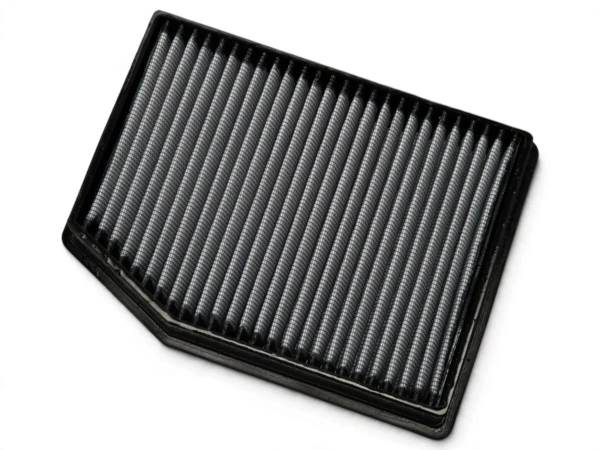
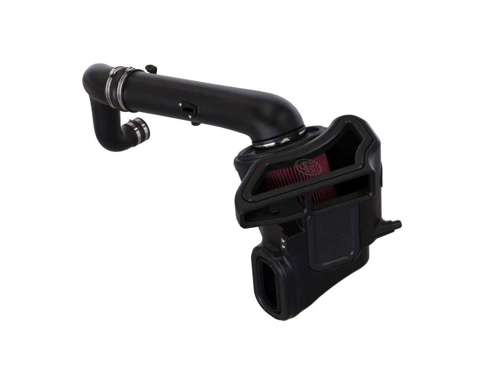

What Truck Owners Actually Complain About (109 Low Reviews, Read)
Every buying guide on this site is built from the same raw material: the reviews of people who already bought the part. We had been quoting individual reviews inside each guide, but never stood back and asked what the whole pile says. So we did. This is what 109 low-rated reviews across 28 products
Every buying guide on this site is built from the same raw material: the reviews of people who already bought the part. We had been quoting individual reviews inside each guide, but never stood back and asked what the whole pile says. So we did.
This is what 109 low-rated reviews across 28 products have in common. Not the compliments — the part where it went wrong.
How this was counted
We keep every review we read in a local dataset, one record per product listing, and this analysis uses 28 such listings spanning cold air intakes, exhaust systems, leveling kits, brake pads, wheels and tyres. From those we pulled every review that was rated three stars or lower, which came to 109 after removing duplicates, because the same part is listed once per vehicle and the same review sits on several pages.
Each review was then read for what it was actually about. “Fitment” means the reviewer says the part would not bolt on, the holes did not line up, the hoses were the wrong length, or the listing claimed a vehicle it does not fit. “Codes” means a check engine light or a specific diagnostic code. A review that was rated low but complains about the price is not counted under either.
The percentages below are shares of those 109, not of all reviews. A low-rated review is a rare thing on these listings — the S&B intake alone carries 2,798 ratings at an average of 4.82 — so we are looking at the tail, which is exactly where a buyer’s risk lives.
Fitment is the complaint, by a wide margin
Thirty of the 109 low reviews — 28% — are about the part not fitting. Nothing else comes close. It is not that fitment is the single most common mistake; it is that it is more common than every other failure combined, and it is the one you can partially check before you buy.
The break down by part type is the interesting part:
- Intakes: 19 of 30. By far the worst offender.
- Exhaust: 8 of 30.
- Leveling: 3 of 30.
An intake is a moulded plastic tube with a fixed geometry. It has to clear the bonnet, mate to a MAF boss, and reach an airbox on a specific engine. Get any of those three wrong and there is no adjustment — the part simply does not go on. That is a different kind of failure from a squeak or a rattle, which you live with or fix later.
An owner of a 2020 RAM 1500 Classic put the arithmetic plainly:
“this item will not fit my 2020 RAM 1500 Classic. The mounting holes in the metal frame are only 9” from each other and the stud pins on the RAM are 10”.”
Nine inches against ten. That is the entire failure, and no amount of careful installation would have saved it. An S&B owner hit the same wall from the other side:
“Holes do not line up to bolt air box down....s and b have sent me 3 now and none are correct”
Three units, none of which fit. That is not a shipping accident.
Year model is where fitment breaks
Read enough of these and a pattern shows up that the listings do not warn you about: the reviews that say “does not fit” are overwhelmingly about a specific model year, not a specific truck.
“I ordered this intake for my 2025 2.3L Ranger. The engine is built different than the 2024 so the turbo has a flat face with nothing for the rubber coupling at the end to slide on to.”
“Description said it would fit all models 02-25. Well it doesn’t. So if you have a 2025 1500 3.0 I6 SST it will not fit.”
Both of those are 2025 vehicles bought against a listing that covered the surrounding years. When a listing spans a long run — “02-25” — the years at either end are the ones carrying the risk, because that is where the manufacturer changed something. A listing that spans nineteen model years is not nineteen years of proven fitment.
The same thing happens with mid-cycle engine changes. A 2.3L Ranger built after 2024 is not the same casting as the one before it, and a part developed against the earlier engine is not going to fit the later one no matter how the listing is worded.
What about check engine lights?
This is where reading the data corrected our own assumption. If you spend any time on truck forums you will come away certain that a cold air intake will throw codes. Across these 109 low reviews, only six mention a check engine light, a code, or a lean condition — 6%, and five of those six are intakes.
“This item is well built. But it made my check engine light come on”
“Easy Install ill give it that, but this caused low RPMs and P0106, P0171,P0174 Codes to come up. Will be going back to stock intake.”
“On your site, it say this product doesn’t need a tune. It immediately brought up my check engine light.”
A P0171 and P0174 together is a lean condition on both banks. That has a known cause and it is not mysterious: an oiled cotton-gauze filter, over-oiled, coats the MAF element, which then under-reports airflow, and the ECU fuels lean to match. It is a real risk and it is worth understanding before you buy.
But six in 109 is the honest number. Codes are the failure people fear and fitment is the failure people get. If you are buying an intake and can only worry about one thing, worry about whether it will physically go on.
Missing hardware: the second most common disappointment
Eight of the 109 — 7% — are about something that should have been in the box and was not.
“Right from the start I was missing the rubber boot at the entrance of the filter box.”
“I received the lift kit , nice quality kit with good directions , reason I’m giving this 2 stars is because there is missing 2 nuts and 4 washers for the rear U bolts”
“Didn’t come with a flange to bolt it to the outlet after the cats, I had to weld the old flange onto the new exhaust”
Notice that last one. The part is fine, the hardware is missing, and the consequence is welding. A missing two-dollar flange turns a bolt-on job into fabrication. This is the single most avoidable category on the list: open the box and inventory it against the parts list before you start, and before the packaging is gone.
Two of these reviews are specifically about hardware the instructions mention but the box does not contain — a MAF extension pigtail on a 2.7L Silverado, and a hose clamp on a crankcase vent. Both are the sort of thing a fifteen-second inventory catches while the return window is still open.
Bent, cracked and failed outright
Three of 109. Worth mentioning only because the worst-fitment products are not the same as the ones that arrive damaged.
“One of the wheels came bent from the manufacturer. I had to have the body shop balance the wheel in order for it to be installed. Considering the other 3 were fine I doubt it was damage due to delivery and handling.”
That review cost us a correction. We had previously written the bent wheel off as a shipping story, and the reviewer explicitly rules it out — three of four arrived fine, so the outlier is a manufacturing defect, not a courier problem.
What this means if you are buying
Four things, in the order they will save you money:
Check your model year specifically. Not the range the listing advertises — your year, against the reviews for that year. The edges of a “02-25” fitment are where it breaks.
Inventory the box before installing. Seven percent of complaints are missing hardware, and nearly all of them would have been caught by laying the parts out against the list in the first ten minutes.
Read the low reviews for your part type, not the rating. The average tells you nothing; a 4.82 average across 2,798 ratings sits on top of a tail where people could not bolt the thing on.
Treat codes as a known, avoidable risk rather than a mystery. If you are fitting an oiled filter, learn how much oil is too much, or buy dry media and skip the question entirely. A dry filter cannot over-oil a MAF, so the P0171 and P0174 pairing in the reviews above stops being a risk you manage and becomes one you never take.

aFe Magnum FLOW Pro DRY S filter → $97.00, 126 reviews, checked 6 Nov 2026

S&B intake with dry filter → $399.00, checked 6 Nov 2026
What we could not verify
The review counts are for the product line, not the individual part. The same intake listed for the Silverado, the Sierra and the F-150 pools its ratings across all three, so “2,798 reviews” describes the line rather than the exact SKU you would receive. This affects every count quoted here.
Fitment complaints are also, by their nature, self-selecting. Someone whose part bolted on in twenty minutes does not sit down to write about it, so the 28% figure describes what goes wrong when something does — not the chance that it will. What we can say is that among owners who were unhappy enough to leave a low rating, fitment was the reason more often than everything else.
Prices and review counts were read off live listings in November 2026. Nothing here is based on testing we performed; it is based on what owners wrote after living with these parts.
Topics
- Engine & Intake
- aFe
- S&B
- 2.7L